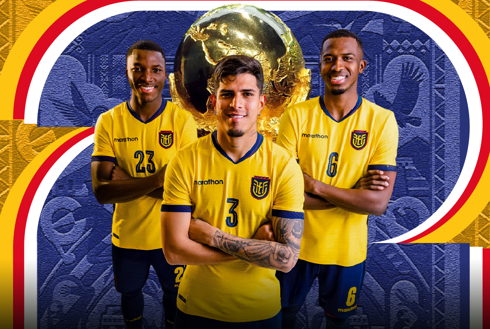
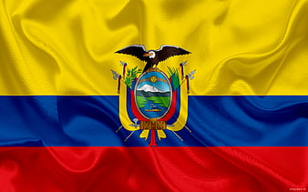

COMEBOL
Ecuador

Selección sudamericana en crecimiento, con cinco participaciones mundialistas y gran solidez defensiva.
Curiosidades
- Su primera participación mundialista fue en 2002.
- En 2006 llegó a octavos de final, su mejor actuación.
- Enner Valencia es el máximo goleador histórico de Ecuador en Mundiales.
- Kendry Páez es uno de los jugadores más jóvenes en debutar en un Mundial (18 años).